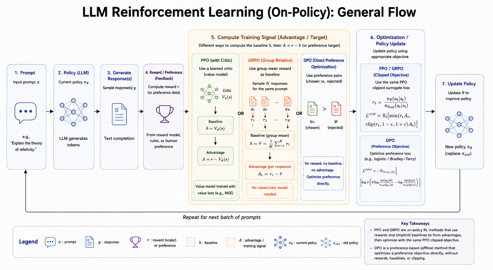

CMU Advanced NLP Lecture 16: Reinforcement Learning for LLMs
This lecture explains how reinforcement learning is used to improve language models after pretraining or supervised fine-tuning. The key idea is simple: let the model generate outputs, evaluate those outputs with a reward signal, and update the model so high-reward outputs become more likely.
RL Framework for LLMs
Three Basic Ingredients
RL for LLMs usually has three moving parts:
- Generate output: the model samples one or more responses from its current policy.
- Evaluate reward: a rule, verifier, reward model, or human-preference model scores each response.
- Update parameters: the model is trained to increase the probability of better responses while keeping updates stable.
The main modeling choice is how to view text generation as a reinforcement-learning problem.
One-Step MDP
In a one-step MDP, the model generates the whole response as one action.
- State: the prompt, or prompt plus context.
- Action: a complete response.
- Policy: the LLM distribution \(p_\theta(y \mid x)\).
- Reward: a scalar score on the full generated sequence.
Example:
Prompt: What is 2 + 3?
Response: Let's think step by step. 2 + 3 = 5.
Reward: 1 if the final answer is correct, otherwise 0.This view is clean and often useful when the reward is only available after the full answer is generated.
Token-Level MDP
In a token-level MDP, generation is treated as a sequence of actions.
- State: the prompt plus tokens generated so far.
- Action: the next token.
- Policy: \(p_\theta(y_t \mid y_{<t}, x)\).
- Reward: usually zero at intermediate steps and nonzero at the end.
One common sparse-reward setup is:
\[ r_t = 0 \quad \text{for } t < T \]
\[ r_T = r(x, y) \]
This matches autoregressive generation more directly, but credit assignment becomes harder: the final reward must be assigned back to earlier token choices.
Policy Gradient
Let the language model be the policy:
\[ p_\theta(y \mid x) \]
For a generated output \(y = (y_1, \dots, y_T)\), the log-probability factorizes as:
\[ \log p_\theta(y \mid x) = \sum_{t=1}^{T} \log p_\theta(y_t \mid y_{<t}, x) \]
Policy gradient increases the probability of actions that lead to high reward. A common training loss is:
\[ L_{\text{PG}} = - \sum_{t=1}^{T} A_t \log p_\theta(y_t \mid y_{<t}, x) \]
where \(A_t\) is an advantage estimate. Intuitively:
- If \(A_t > 0\), increase the probability of that token.
- If \(A_t < 0\), decrease the probability of that token.
- If \(A_t\) is close to 0, the update should be small.
Group-Based Advantage
A practical way to estimate advantage for LLMs is to sample multiple outputs for the same prompt.
For each input \(x_i\):
- Generate \(K\) outputs.
- Compute a reward for each output.
- Compare each reward against the group’s average reward.
One normalized form is:
\[ A^{i,k} = \frac{ r^{i,k} - \operatorname{mean}(r^{i,1}, \dots, r^{i,K}) }{ Z } \]
where \(Z\) is often the group standard deviation, sometimes with a small constant for numerical stability.
This avoids training a separate value function, but it does not fully solve token-level credit assignment. The reward still belongs to the whole response, not to a specific intermediate token.
PPO
PPO, or Proximal Policy Optimization, controls how far the new policy can move from the old policy in one update.
For each generated token, define the probability ratio:
\[ \rho_t(\theta) = \frac{ p_\theta(y_t \mid y_{<t}, x) }{ p_{\theta_{\text{old}}}(y_t \mid y_{<t}, x) } \]
The clipped PPO objective is:
\[ L_{\text{PPO}} = \min \left( \rho_t(\theta) A_t, \operatorname{clip} (\rho_t(\theta), 1 - \epsilon, 1 + \epsilon) A_t \right) \]
The ratio tells us how much the new model changed the probability of the sampled action:
- \(\rho_t = 1\): no change from the old policy.
- \(\rho_t > 1\): the new policy gives the action higher probability.
- \(\rho_t < 1\): the new policy gives the action lower probability.
The clipping term prevents overly large policy updates. This matters for LLMs because a model can become unstable if RL pushes it too far from its pretrained or supervised behavior.
In code, the core operation looks like:
ratio = torch.exp(selected_log_probs - old_selected_log_probs)
clipped_ratio = torch.clamp(ratio, 1 - eps, 1 + eps)
objective = torch.min(ratio * advantages, clipped_ratio * advantages)
loss = -objective.mean()Key Decisions
When applying RL to LLMs, the important choices are:
- Whether to start RL directly from a pretrained model or from a supervised fine-tuned model.
- Which prompts or datasets to train on.
- What reward function to use.
- How to estimate advantages.
- Which policy-gradient objective and hyperparameters to use.
- How strongly to constrain the model from drifting.
It is often beneficial to fine-tune before RL:
- It teaches the model the task format.
- It uses supervision from available data.
- It makes high-reward examples easier to discover during RL.
The tradeoff is that supervised fine-tuning can narrow the model’s output distribution.

Examples
Reversing a String
For a simple verifiable task, the reward can be rule based.
Task: Reverse a string.
Input: hello
Correct output: ollehA reward function can be:
\[ r(x, y) = \begin{cases} 1 & \text{if the answer is correct} \\ 0 & \text{otherwise} \end{cases} \]
A reasonable training recipe is:
- Start with supervised fine-tuning so the model learns the input-output format.
- Generate multiple candidate answers for each input.
- Score answers with the rule-based verifier.
- Use group-based advantages and PPO to improve the policy.
This is a clean RL setting because the reward is cheap, deterministic, and verifiable.
Solving Math Problems
Math reasoning has a similar structure, but the output is more complex.
- Input: a problem statement.
- Output: reasoning steps plus a final answer.
- Reward: answer correctness, format correctness, or both.
The MDP is often treated as one-step at the sequence level: the model generates a complete solution and receives reward after the final answer is checked.
Useful rewards include:
- 0/1 answer reward: whether the final answer is correct.
- Format reward: whether the output follows the required structure, such as including a final answer field.
PPO with group-based advantages can compare several sampled solutions for the same problem. A KL penalty is often added so the policy does not drift too far from the original model.
Aligning with Human Preference
For open-ended chat, there is usually no single correct answer. The key challenge is reward design.
Instead of a rule-based verifier, RLHF uses human preference data:
- Supervised fine-tuning: train an instruction-following model on high-quality prompt-response examples.
- Reward modeling: train a reward model to predict which response humans prefer.
- RL optimization: optimize the language model to maximize the reward model’s score, usually with PPO or a related policy-optimization method.
Reward Modeling
A reward model assigns a scalar score:
\[ r_\phi(x, y) \]
It is commonly trained from preference pairs:
- \(y_+\): the response preferred by a human.
- \(y_-\): the less preferred response.
The pairwise preference loss is:
\[ \mathcal{L}_{\text{RM}} = - \sum_{(x, y_+, y_-) \in D} \log \sigma \left( r_\phi(x, y_+) - r_\phi(x, y_-) \right) \]
The model learns to give higher scores to preferred responses than to rejected responses.
Reward Hacking
Reward hacking happens when the model finds a way to maximize the reward without actually solving the intended task.
Examples:
- A model exploits a formatting rule without producing a useful answer.
- A model repeats phrases that the reward model tends to like.
- A model becomes overly cautious or refusal-prone because that pattern scores well.
This is why the reward function and the stability constraints matter.
KL Divergence Constraint
RLHF usually includes a penalty that keeps the new policy close to a reference policy \(p_0\):
\[ \underset{\theta}{\arg\max}\; \mathbb{E}_{x,\,y \sim p_\theta} \left[ r(x, y) \right] - \beta D_{\mathrm{KL}} \left( p_\theta(\cdot \mid x) \;\Vert\; p_0(\cdot \mid x) \right) \]
The KL term acts as a constraint:
- Higher \(\beta\) keeps the model closer to the reference policy and improves stability.
- Lower \(\beta\) gives the model more freedom to optimize reward, but increases the risk of reward hacking or degraded language quality.
The practical goal is balance: improve the model with reward feedback without losing the useful behavior learned during pretraining and supervised fine-tuning.
Key Takeaway
RL for LLMs is less about discovering a long-horizon strategy in a physical environment and more about improving generation with feedback. The model samples text, receives a reward on the output, and updates its token probabilities through policy optimization. The hard parts are reward design, credit assignment, and keeping the model stable while it improves.
Source: CMU Advanced NLP Fall 2025, Lecture 16: Reinforcement Learning for LLMs.